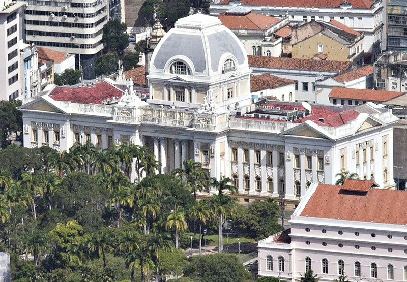
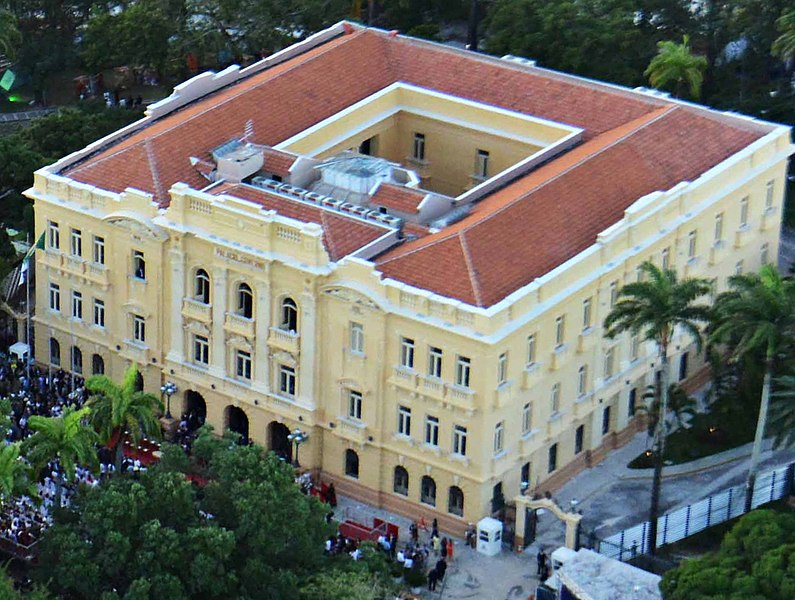
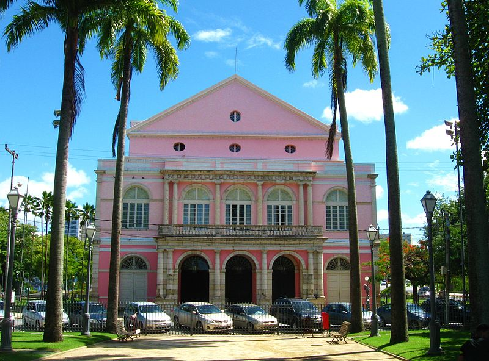

- Tribunal de Justiça de Pernambuco - Recife
- Palácio do Campo das Princesas - Recife
- Teatro Santa Isabel - Recife
Visitar o Recife Antigo é sem duvidas um passeio obrigatório para quem pretende conhecer a capital do estado de Pernambuco, é lá que o turista irá encontra uma enorme variedade de atividades culturais e outras atrações, como Tribunal de Justiça de Pernambuco, Palácio do Campo das Princesas e Teatro Santa Isabel.
O Recife Antigo é bastante visitado aos finais de semana, que é quando os turistas e moradores circulam nesta parte da cidade. O melhor horário para conhecer o Recife antigo é durante a tarde, quando o sol já esta ficando mais fraco, aproveite também para apreciar o por do sol no Marco Zero.
Tribunal de Justiça de Pernambuco - Recife
Palácio da Justiça é o edifício-sede do Poder Judiciário de Pernambuco e abriga em suas instalações o Tribunal de Justiça do Estado. Registra a história que o Tribunal de Justiça de Pernambuco passou a existir mediante o alvará de D. João VI, de 6 de fevereiro de 1821. À época, foi denominado Tribunal da Relação de Pernambuco e instalou-se num espaço dentro do antigo Colégio dos Jesuítas do Recife, em 13 de agosto de 1822. A sede do Tribunal foi transferida algumas vezes: do Colégio dos Jesuítas passou para o imóvel do antigo Erário (demolido em 1840), depois para o Palácio do Governo, em 12 de julho de 1838. Voltou para o Colégio dos Jesuítas, funcionou na Cadeia Velha, na rua do Imperador, até a sua extinção em 8 de janeiro de 1892, data em que fora criado o Superior Tribunal de Justiça. A partir de então, funcionou num prédio que ficava entre o atual Arquivo Público e a Secretaria da Fazenda até ocupar o imponente Palácio da Justiça, localizado na esquina da rua do Imperador Pedro II, com frente para o jardim da Praça da República.
Palácio do Campo das Princesas - Recife
O Palácio do Campo das Princesas é a sede administrativa do poder executivo do estado brasileiro de Pernambuco, localizada na cidade do Recife. Idealizado desde 1786 pelo governador José César Meneses, foi construído em 1841 pelo engenheiro Morais Âncora, a mando do governador Francisco do Rego Barros, no local onde ficava o Erário Régio. Localiza-se no bairro de Santo Antônio (Ilha de Antônio Vaz), na Praça da República, próximo ao Teatro de Santa Isabel e ao Palácio da Justiça. À sua frente está plantado um baobá secular, que possivelmente serviu de inspiração a Saint Exupéry, quando de sua passagem pelo Recife, antes de escrever O pequeno príncipe.
Teatro Santa Isabel - Recife
Monumento tombado pelo Patrimônio Histórico e Artístico Nacional em 31 de outubro de 1949 e considerado um dos 14 teatros-patrimônio do Brasil, o Teatro de Santa Isabel é o mais antigo e expressivoexemplar de Arquitetura Neoclássica em Pernambuco e um dos mais notáveis do país. A ideia de construir um Teatro público no Recife, capital da província, partiu de Francisco do Rego Barros, futuro Conde da Boa Vista, presidente da província de 1837 a 1844. O engenheiro contratado para transformar esse sonho civilizatório em realidade foi o célebre francês Louis Léger Vauthier.
